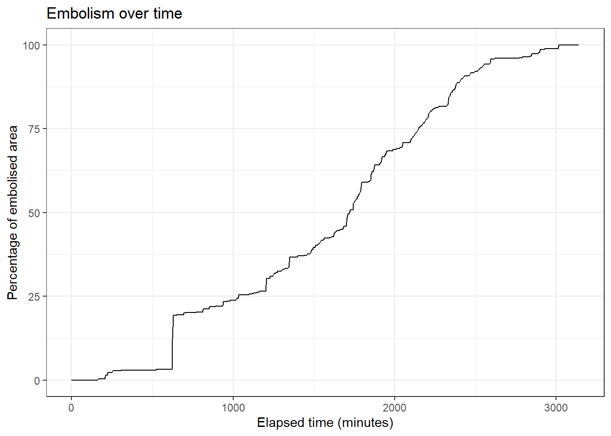
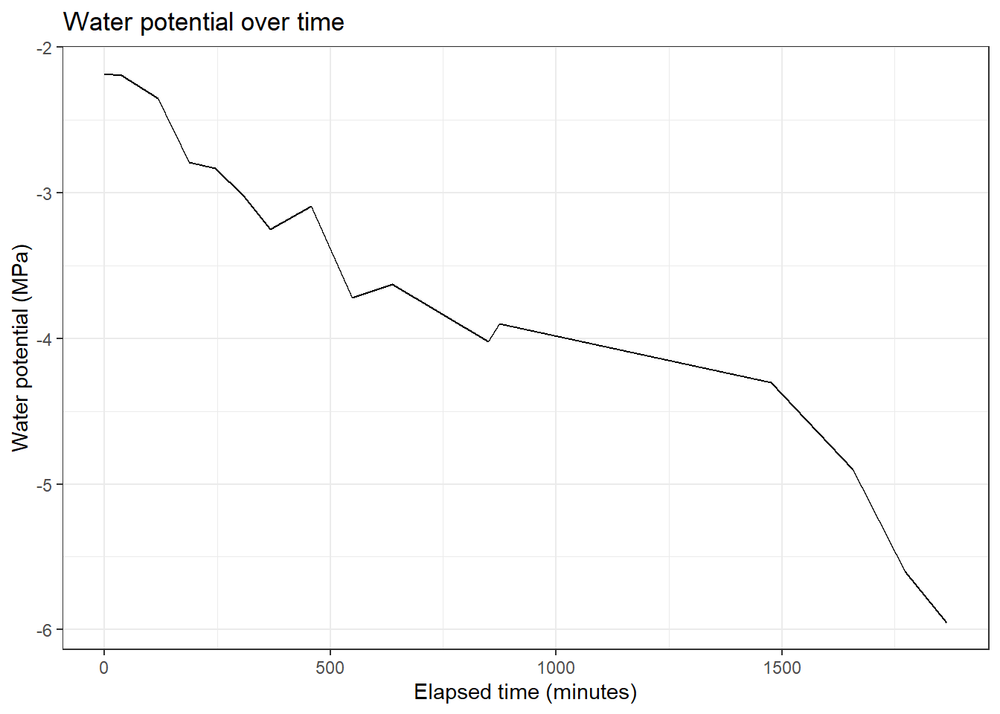
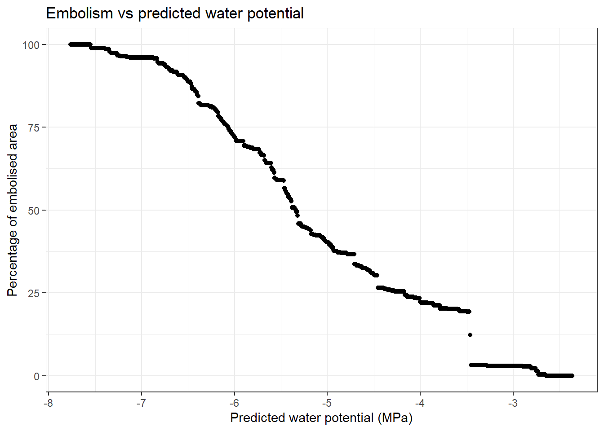
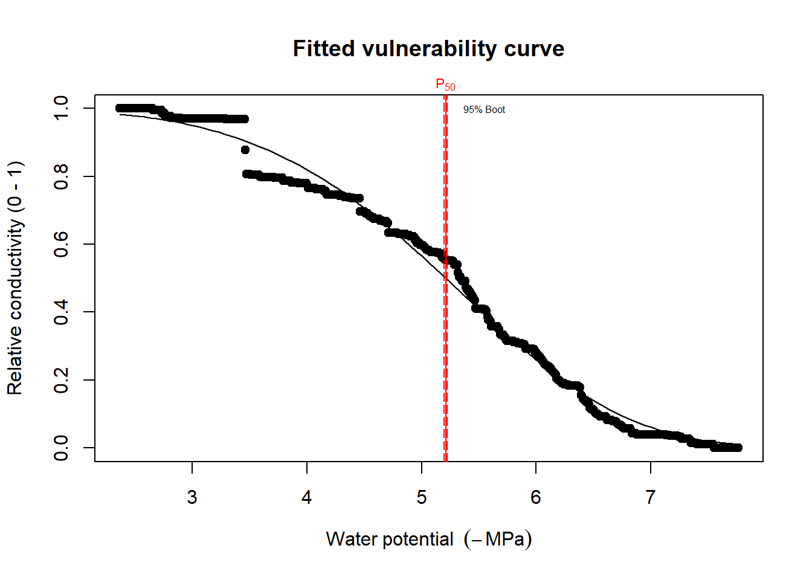

cavicam_protocol.github.io
Guide to optical vulnerability analysis
asdasd
Exemplary analysis of a single vulnerability curve
When you click the Render button a document will be generated that includes both content and the output of embedded code. You can embed code like this:
Load libraries
── Attaching core tidyverse packages ──────────────────────── tidyverse 2.0.0 ──
✔ dplyr 1.1.4 ✔ readr 2.1.5
✔ forcats 1.0.0 ✔ stringr 1.5.0
✔ ggplot2 3.5.1 ✔ tibble 3.2.1
✔ lubridate 1.9.3 ✔ tidyr 1.3.1
✔ purrr 1.0.2
── Conflicts ────────────────────────────────────────── tidyverse_conflicts() ──
✖ dplyr::filter() masks stats::filter()
✖ dplyr::lag() masks stats::lag()
ℹ Use the conflicted package (<http://conflicted.r-lib.org/>) to force all conflicts to become errors
Lade nötiges Paket: mgcv
Lade nötiges Paket: nlme
Attache Paket: 'nlme'
Das folgende Objekt ist maskiert 'package:dplyr':
collapse
This is mgcv 1.8-42. For overview type 'help("mgcv-package")'.
This is scam 1.2-17.
Lade nötiges Paket: car
Lade nötiges Paket: carData
Attache Paket: 'car'
Das folgende Objekt ist maskiert 'package:dplyr':
recode
Das folgende Objekt ist maskiert 'package:purrr':
someLoad data
## load the embolism data
frex_05_all_vessels <- read.csv("frex_05_all_vessels.csv")
## load the water potentials
frex_05_psi <- read_excel("frex_05_psi.xlsx", sheet = "FREX_05")Process dataframes
frex_05_all_vessels <- frex_05_all_vessels |>
rename(id = X) |> ## rename the id column
mutate(area_cav = cumsum(Area), ## calculate the cumulative embolised area
perc_area_cav = area_cav / sum(Area) * 100, ## calculate the percentage of embolised area
minutes = id * 5 - 5) |> ## convert each row into minutes (1 image every 5 minutes)
select(c(area_cav, perc_area_cav, minutes)) ## select only the columns we need
frex_05_psi <- frex_05_psi |>
mutate(
drying_interval = start_measurement - lag(start_measurement, 1), ## get drying interval between previous measurement and current one
equilibration_interval = start_measurement - start_equilibration, ## time between taking sample and measurement
minutes = difftime(start_measurement, min(start_measurement), units = "mins") |> as.numeric(), ## elapsed time since taking the first sample
psi = psi |> as.numeric())Plot data
frex_05_all_vessels |>
ggplot(aes(x = minutes, y = perc_area_cav)) +
geom_line() +
labs(title = "Embolism over time",
x = "Elapsed time (minutes)",
y = "Percentage of embolised area") +
theme_bw()
frex_05_psi |>
ggplot(aes(x = minutes, y = - psi / 10)) +
geom_line() +
labs(title = "Water potential over time",
x = "Elapsed time (minutes)",
y = "Water potential (MPa)") +
theme_bw()
Create model of water potential ~ time
Define function to predict water potential for the embolism data Uses b-splines for a flexible shape.
##
scamfun <- function(water_potential, area){
mod <- scam::scam(psi ~ s(minutes, bs = "cr", k = 3), data = water_potential)
predict(mod, newdata = list(minutes = area$minutes))
}Predict water potentials y at minute x
frex_05_all_vessels <- frex_05_all_vessels |>
mutate(psi_pred = scamfun(frex_05_psi, frex_05_all_vessels),
psi_pred_MPa = - psi_pred / 10) ## convert to MPa: divide by 10 and neg. sign Plot the percent embolised area vs predicted water potential
This is the data needed to model the xylem vulnerability curve.
frex_05_all_vessels |>
ggplot(aes(x = psi_pred_MPa, y = perc_area_cav)) +
geom_point() +
labs(title = "Embolism vs predicted water potential",
x = "Predicted water potential (MPa)",
y = "Percentage of embolised area") +
theme_bw()
Fit the vulnerability curve
The fitplc package fits a sigmoidal curve to the data. The sigmoidal curve is rotational symmetric, i.e. there is a point of inflection at 50% embolism. The curve is defined by Ogle et al. (2009). By default, the model is fitted with bootstrapped confidence intervals from 1000 bootstrap replicates. That means, from the observed data points, here 629 rows, 1000 samples are drawn with replacement and the model is fitted to each of these samples. We get 1000 different models and their coefficients. The distribution of the coefficients is used to calculate the confidence intervals (CI). That means, at 95% of the time, the true value of the coefficient is within the CI. Bootstrapping is also useful here to address the violation of independent data (repeated measurements of leaf water potential, time series).
mod_frex_05 <- fitplc(frex_05_all_vessels,
varnames = ## tell which variables are to be used
c(PLC = "perc_area_cav", ## PLC = "percent loss of conductivity", here: percent area cavitated
WP = "psi_pred_MPa"), ## WP = "water potential", here: predicted water potential [MPa]
method = "sigmoid",
bootci = TRUE,
nboot = 1000)Plot the fitted curve
The fitplc package inverts the vulnerability curve, relative conductivity is 1 at 0% embolism and 0 at 100% embolism. The fitted coefficient , P50 ≈ -5.2 MPa, is located at the inflection point of the curve, i.e. where the slope is steepest. The confidence interval is very narrow, showing that P50 is very likely to be around -5.2 MPa.
plot(mod_frex_05, main = "Fitted vulnerability curve")